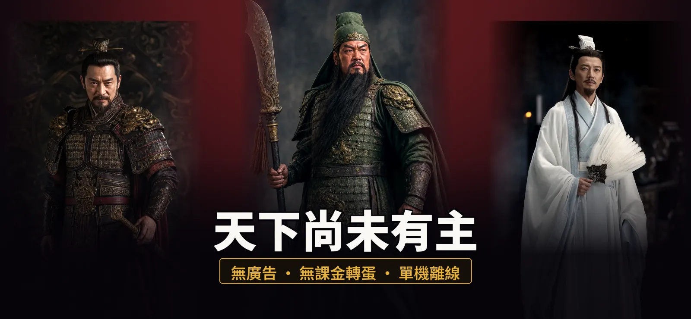
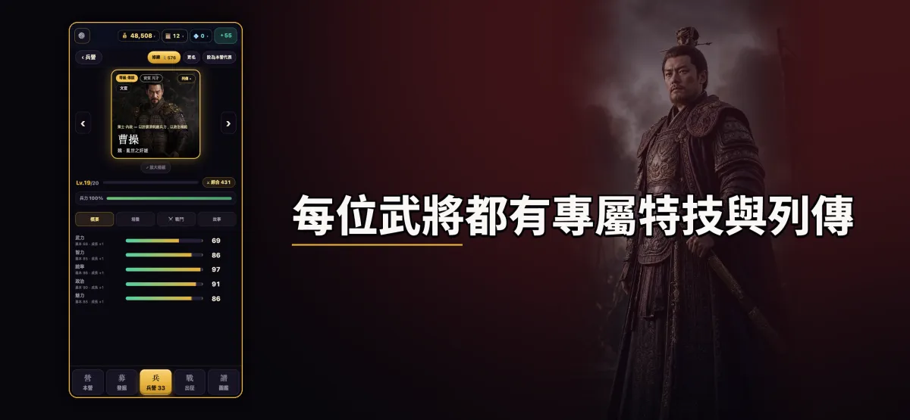
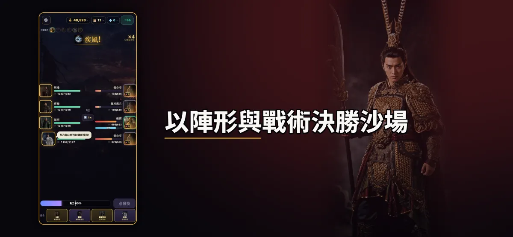
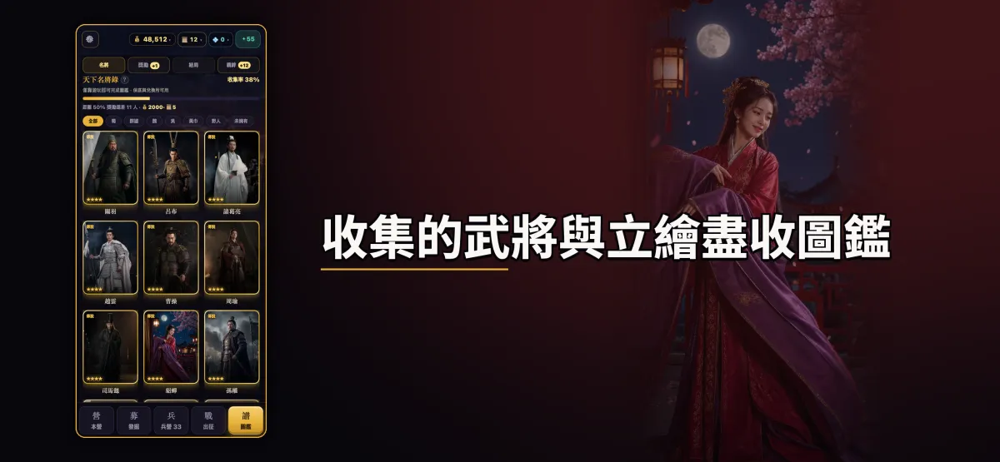
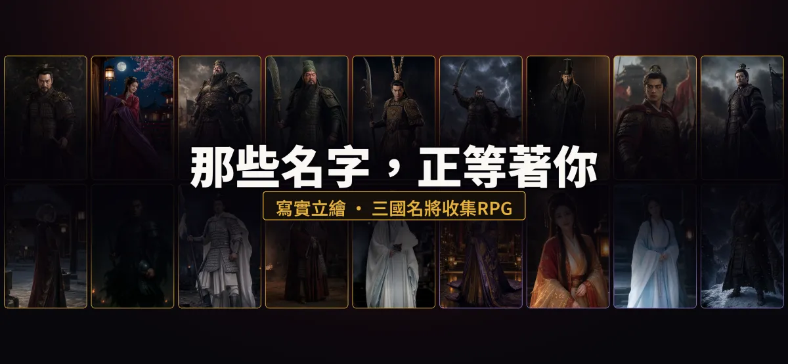
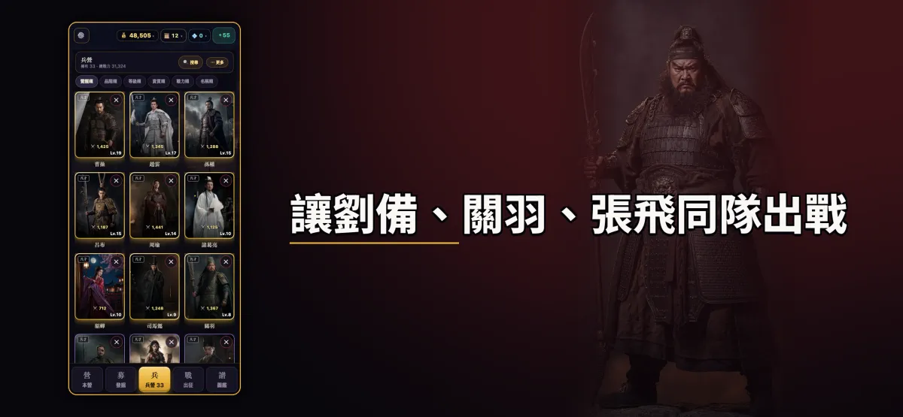
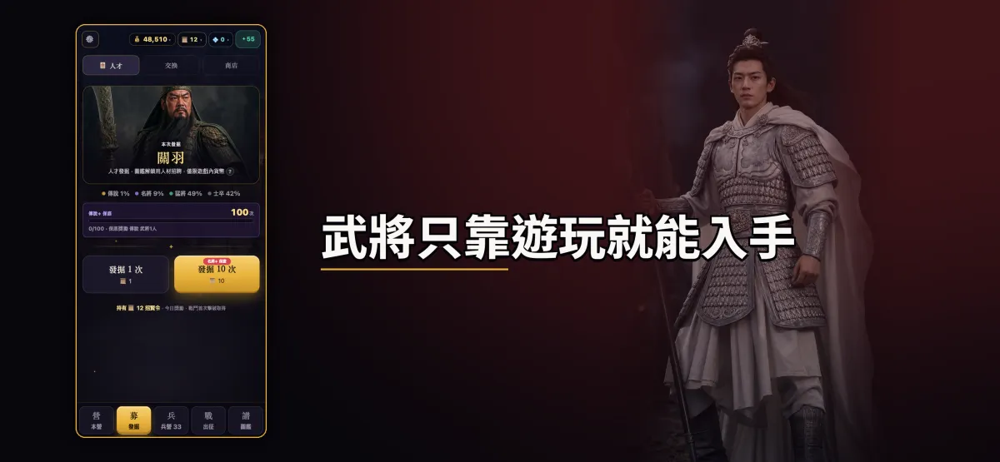
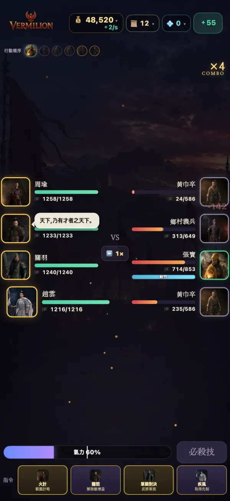
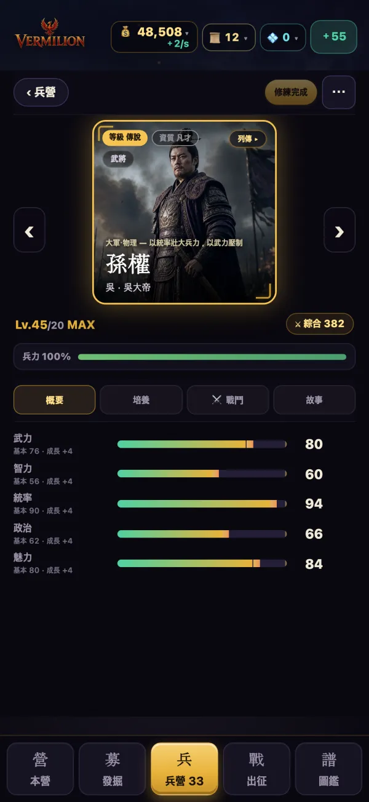
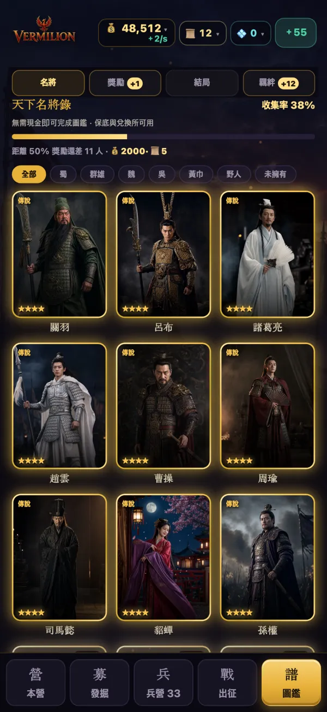

百位以上名將，寫實肖像呈現
每位武將都有專屬特技與列傳。武將之間結下羈絆，便能喚醒隱藏的力量。



陣形與戰術決定勝負
誰站在哪裡就是一切。以陣形與戰術，突破貫穿三國時代的 50 場戰場戰役。

一騎當千 — 一將殺穿千軍萬馬
親自操控一名武將，殺入敵陣的動作模式。每局約 2 分 30 秒，共 7 個戰場，可選擇難度等級。

圖鑑與演武場
收集到的武將與肖像都會記錄在圖鑑中。演武場裡還有單挑、問答等小遊戲。

你的選擇改變結局
依照戰役中的選擇，故事將走向不同的結局。

我們的承諾
無廣告
遊玩過程中完全不會出現廣告。
無課金轉蛋
招募武將只使用遊玩獲得的資源，沒有以現金購買抽取的機制，也沒有訂閱。
全武將皆可遊玩取得
雖有輔助養成的選購道具，但所有武將都能只靠遊玩取得。
完全離線
不需帳號，也沒有伺服器。存檔只保存在你的裝置上。
先玩再決定
免費下載。前 12 場戰場（至官渡）免費，一次購買即可解鎖本篇戰役。
遊戲截圖





最新更新 1.0.3
- 一騎當千新戰場「博望坡」— 迎戰夏侯惇。
- 升級時顯示提升的能力值。
遊戲資訊
- 平台
- iPhone・iPad（iOS）
- 價格
- 免費下載・前 12 場戰場免費・一次購買解鎖本篇
- 語言
- 한국어・日本語・繁體中文・English
- 上架地區
- 韓國・日本・台灣・香港・澳門・新加坡・馬來西亞